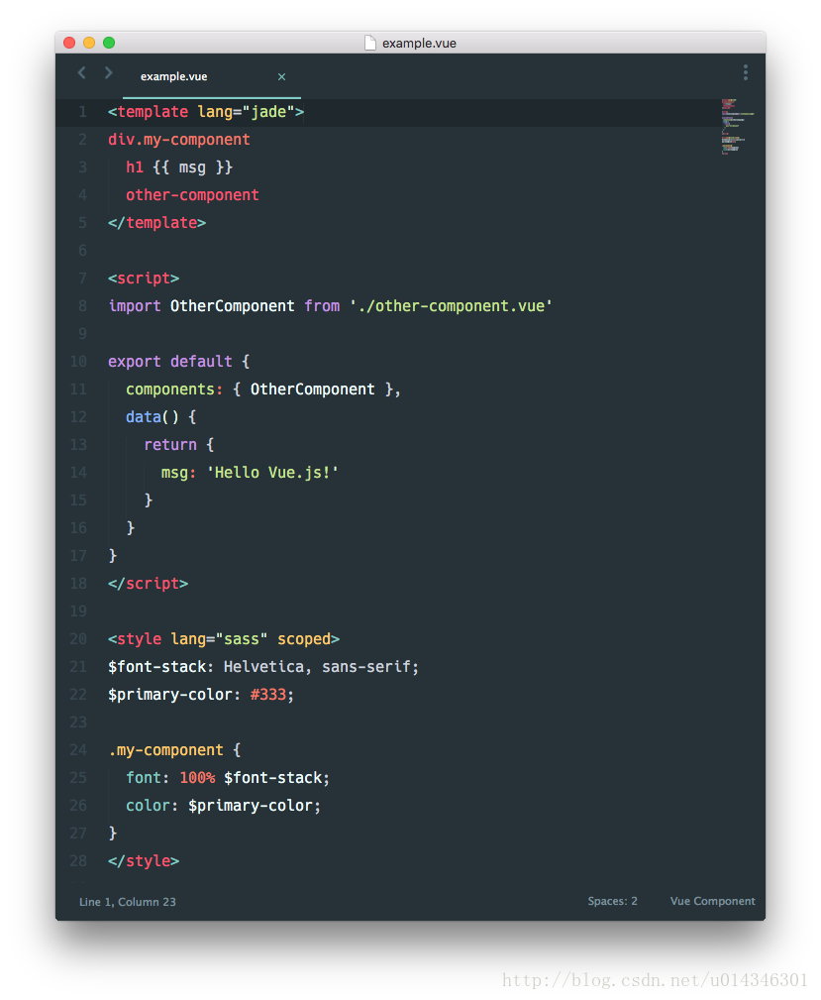
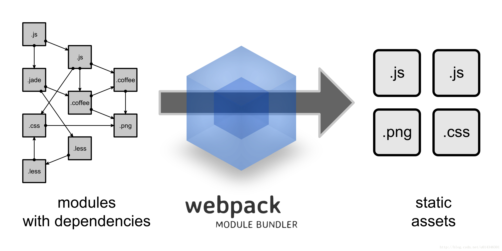

- vue-loader 是一个加载器，能把如下格式的 Vue 组件转化成JavaScript模块。

- Webpack 是一个模块打包工具。在开发中，它把一堆文件中每个都作为一个模块处理，找出它们间的依赖关系，并打包成待发布的静态资源。

- Vue 组件规格
*.vue 文件是用户用 HTML-like 的语法编写的 Vue 组件。每个 *.vue 文件都包括三部分 <template>, <script> 和 <style>
- 脚手架工具vue-cli
创建项目的时候推荐使用脚手架工具，可以用 vue-loader 和 vue-cli，命令行如下：
npm install -g vue-cli
vue init webpack hello-vue
cd hello-vue
npm install --registry https://registry.npm.taobao.org
npm run dev
项目结构说明